СП 323.1325800.2017 «Территории селитебные. Правила проектирования наружного осв»
О документе: разработчики, утверждение, регистрация, ключевые слова
Издание официальное
1 ИСПОЛНИТЕЛИ -Федеральное государственное бюджетное учреждение «Научно-исследовательский институт строительной физики Российской академии архитектуры и строительных наук» (НИИСФ РААСН) и Общество с ограниченной ответственностью «ЦЕРЕРА-ЭКСПЕРТ» (ООО «ЦЕРЕРА-ЭКСПЕРТ»)
2 ВНЕСЕН Техническим комитетом по стандартизации ТК 465 «Строительство»
3 ПОДГОТОВЛЕН к утверждению Департаментом градостроительной деятельности и архитектуры Министерства строительства и жилищнокоммунального хозяйства Российской Федерации (Минстрой России)
4 УТВЕРЖДЕН приказом Министерства строительства и жилищнокоммунального хозяйства Российской Федерации от 14 ноября 2017 г. № 1542/пр и введен в действие с 15 мая 2018 г.
5 ЗАРЕГИСТРИРОВАН Федеральным агентством по техническому регулированию и метрологии (Росстандарт)
В случае пересмотра (замены) или отмены настоящего свода правил соответствующее уведомление будет опубликовано в установленном порядке. Соответствующая информация, уведомление и тексты размещаются также в информационной системе общего пользования - на официальном сайте разработчика (Минстрой России) в сети Интернет
© Минстрой России, 2017
Настоящий нормативный документ не может быть полностью или частично воспроизведен, тиражирован и распространен в качестве официального издания на территории Российской Федерации без разрешения Минстроя России
- 6.9 Методика расчета эквивалентной вуалирующей яркости…………...
- 6.10 Ограничение слепящего действия установок наружного освещения. .
- 7 Расчет и проектирование электротехнической части наружного освеще- ния …………………………………………………………………………….
7.1
Общие положения расчета электротехнической части ………………..
7.2
Источники электрического питания наружного освещения …………..
- 7.3 Требования к пунктам электрического питания наружного освеще-
ния …………………………………………………………………………….
- 7.4 Сети наружного освещения……………………………………………..
7.5
Расчет нагрузок осветительных установок наружного освещения …..
- 7.6 Выбор сечения проводов и кабелей для наружного освещения ……..
7.7
Выбор защитных аппаратов для наружного освещения ……………..
7.8
Защитное заземление наружного освещения …………………………
- 7.9 Выбор схем автоматизированных систем управления наружным
освещением…………………………………………………………………...
- 7.10 Учет электроэнергии потребляемой наружным освещением………..
- 8 Расчет электропотребления установок наружного
Освещения…………………………………………………………………..
- 9 Расчет относительной удельной мощности установок наружного
освещения …………………………………………………………….……..
- 10 Схемы расположения осветительных приборов…………………………..
- 11 Структура проектной документации. ……………………………………..
Приложение А Пример определения удельной установленной мощности для участка расчетного поля дороги………………………………………………….
Библиография ……………………………………………………………………
Дата введения 2018-05-15
УДК 721:535. 241.46:006.354(083.74) ОКС 91.160.01, 93.080.40
Ключевые слова: проектирование освещения, нормируемые значения освещенности, яркости, наружное освещение, освещение улиц, дорог, площадей, дорожное покрытие, удельная установленная мощность
Введение
6 РАЗРАБОТАН ВПЕРВЫЕ
Настоящий свод правил разработан в развитие Федерального закона от 30 декабря 2009 г. № 384-ФЗ «Технический регламент о безопасности зданий и сооружений», СП 52.13330 «СНиП 23-05-95* Естественное и искусственное освещение», с учетом требований Федерального закона от 23 ноября 2009 г. № 261-ФЗ «Об энергосбережении и о повышении энергетической эффективности и о внесении изменений в отдельные законодательные акты Российской Федерации».
Свод правил устанавливает правила расчета и проектирования наружного искусственного освещения селитебных территорий.
Свод правил разработан авторским коллективом: федеральное государственное бюджетное учреждение «Научно-исследовательский институт строительной физики Российской академии архитектуры и строительных наук» (канд. техн. наук И.А. Шмаров , канд. техн. наук В.А. Земцов , инж. Л.В. Бражникова ), ООО «ЦЕРЕРА-ЭКСПЕРТ» (инж. Е.А.Литвинская ), ООО «Билайт-трейд» (канд. техн. наук С.М. Гвоздев , инж. Н.Д. Садовникова ), Нижегородский государственный технический университет им. Р.Е. Алексеева (канд. техн. наук Е.Б. Солнцев , инж. О.Ю.Малафеев ), Программа развития ООН (инж. А.С. Шевченко ), ЗАО «Светлана-Оптоэлектроника» (канд. техн. наук А.А. Богданов ), инж. В.В. Чернов ).
1Область применения
Настоящий свод правил не распространяется на освещение территорий спортивных сооружений, метрополитенов, железнодорожных станций и их путей, аэродромов, морских и речных портов, а также на проектирование специального технологического и охранного освещения.
2Нормативные ссылки
В настоящем своде правил использованы нормативные ссылки на следующие документы:
ГОСТ 21.110-2013 Система проектной документации для строительства. Спецификация оборудования, изделий и материалов
ГОСТ 21.114-2013 Система проектной документации для строительства. Правила выполнения эскизных чертежей общих видов нетиповых изделий
ГОСТ 21.607-2014 Система проектной документации для строительства. Правила выполнения рабочей документации наружного электрического освещения
ГОСТ 26824-2010 Здания и сооружения. Методы измерения яркости ГОСТ 29322-2014 Напряжения стандартные
\_\_\_\_\_\_\_\_\_\_\_\_\_\_\_\_\_\_\_\_\_\_\_\_\_\_\_\_\_\_\_\_\_\_\_\_\_\_\_\_\_\_\_\_\_\_\_\_\_\_\_\_\_\_\_\_\_\_\_\_\_\_\_\_\_\_
Residential areas. Urban and road lighting design
СП 323.1325800.2017
ГОСТ 30331.1-2013 Электроустановки низковольтные. Часть 1. Основные положения, оценка общих характеристик, термины и определения
ГОСТ 31946-2012 Провода самонесущие изолированные и защищенные для воздушных линий электропередачи. Общие технические условия
ГОСТ 32144-2013 Электрическая энергия. Совместимость технических средств электромагнитная. Нормы качества электрической энергии в системах электроснабжения общего назначения
ГОСТ IEC 60947-1-2014 Аппаратура распределения и управления низковольтная. Часть 1. Общие правила
ГОСТ Р 12.4.026-2001 Система стандартов безопасности труда. Цвета сигнальные, знаки безопасности и разметка сигнальная. Назначение и правила применения. Общие технические требования и характеристики. Методы испытаний
ГОСТ Р 21.1101-2013 Система проектной документации для строительства. «Основные требования к проектной и рабочей документации»
ГОСТ Р 50030.2-2010 Аппаратура распределения и управления низковольтная. Часть 2. Автоматические выключатели
ГОСТ Р 50571.4.43-2012 Электроустановки низковольтные. Часть 4-43. Требования по обеспечению безопасности. Защита от сверхтока
ГОСТ Р 50571.5.54-2013 Электроустановки низковольтные. Часть 5-54. Выбор и монтаж электрооборудования. Заземляющие устройства, защитные проводники и защитные проводники уравнивания потенциалов
ГОСТ Р 55392-2012 Приборы и комплексы осветительные. Термины и определения
ГОСТ Р 54350-2015 Приборы осветительные. Светотехнические требования и методы испытаний
ГОСТ Р 55840-2013 Источники света и приборы осветительные. Представление данных для расчета освещения
СП 52.13330.2016 «СНиП 23-05-95* Естественное и искусственное освещение»
СП 98.13330.2012 «СНиП 2.05.09-90 Трамвайные и троллейбусные линии»
СП 256.1325800.2016 Электроустановки жилых и общественных зданий. Правила проектирования и монтажа
СанПиН 2.2.1/2.1.1.1278-03 Гигиенические требования к естественному, искусственному и совмещенному освещению жилых и общественных зданий
Примечание - При пользовании настоящим сводом правил целесообразно проверить действие ссылочных документов в информационной системе общего пользования -на официальном сайте федерального органа исполнительной власти в сфере стандартизации в сети Интернет или по ежегодному информационному указателю «Национальные стандарты», который опубликован по состоянию на 1 января текущего года, и по выпускам ежемесячного информационного указателя «Национальные стандарты» за текущий год. Если заменен ссылочный документ, на который дана недатированная ссылка, то рекомендуется использовать действующую версию этого документа с учетом всех внесенных в данную версию изменений. Если заменен ссылочный документ, на который дана датированная ссылка, то рекомендуется использовать версию этого документа с указанным выше годом утверждения (принятия). Если после утверждения настоящего свода правил в ссылочный документ, на который дана датированная ссылка, внесено изменение, затрагивающее положение на которое дана ссылка, то это положение рекомендуется применять без учета данного изменения. Если ссылочный документ отменен без замены, то положение, в котором дана ссылка на него, рекомендуется применять в части, не затрагивающей эту ссылку. Сведения о действии сводов правил целесообразно проверить в Федеральном информационном фонде стандартов.
3Термины и определения
В настоящем своде правил применены следующие термины с соответствующими определениями:
- 3.1аппарат защиты
- Аппарат, автоматически отключающий защищаемую электрическую цепь при ненормальных режимах.Источник: СП 256.1325800.2016, 3.1.2
- 3.2вечерняя фаза
- Фаза питающей или распределительной электрической сети наружного освещения, отключаемая в ночные часы (часы спада интенсивности движения).
- 3.3групповая сеть
- Электрическая сеть от пунктов питания наружного освещения до световых приборов.
- 3.4дифференциальный ток I ∆
- Среднеквадратичное значение векторной сумы токов, протекающих через главную цепь устройства дифференциального тока.Источник: ГОСТ 30331.1-2013, 20.6
- 3.5дорога (в городском или сельском поселении)
- Автомобильная дорога, являющаяся составным элементом городской или сельской дорожноуличной сети или соединяющая городское или сельское поселение с функционально связанными с ним объектами, но в отличие от улиц, прокладываемая по свободным от застройки территориям.
- 3.6защитный проводник PE
- Проводник, предназначенный для целей электрической безопасности, например, для защиты от поражения электрическим током.Источник: ГОСТ 30331.1-2013, 20.23
- 3.7интенсивность движения транспорта, единиц в час
- Число транспортных средств в единицу времени, проходящих через поперечное сечение полотна дороги в часы пик в обоих направлениях.Источник: СП 52.13330.2016, 3.25
- 3.8коэффициент эксплуатации осветительной установки MF , относительные единицы
- Коэффициент, равный отношению освещенности или яркости в заданной точке, создаваемой осветительной установкой в конце установленного срока эксплуатации, к освещенности или яркости в той же точке в начале эксплуатации. Примечания 1 Коэффициент учитывает снижение освещенности или яркости в процессе эксплуатации осветительной установки вследствие спада светового потока, выхода из строя источников света и невосстанавливаемого изменения отражающих и пропускающих свойств оптических элементов осветительных приборов, а также загрязнения поверхностей, проезжей части дороги или тротуара: где MF сп - коэффициент, учитывающий спад светового потока источников света; MF ви - коэффициент, учитывающий выход из строя источников света; MF оп - коэффициент, учитывающий загрязнение и невосстанавливаемое изменение отражающих и пропускающих свойств оптических элементов осветительных приборов. 2 Коэффициент эксплуатации обратно пропорционален коэффициенту запаса К з ( MF = 1/ К з ).
- 3.9нейтраль
- Общая часть многофазной системы переменного тока, соединенной звездой, находящаяся под напряжением, или средняя часть однофазной системы переменного тока, находящаяся под напряжением
- 3.10нейтральный проводник N
- Проводник, электрически присоединенный к нейтрали и используемый для передачи электрической энергии.
- 3.11ночная фаза
- Фаза групповой или распределительной сети наружного освещения, не отключаемая в ночные часы.
- 3.12освещенность E, лк
- Отношение светового потока d , падающего на элемент поверхности, содержащий рассматриваемую точку, к площади dA этого элемента: E = d / dA .Источник: СП 52.13330.2016, 3.48
- 3.13относительная удельная мощность дорожного освещения Dp, Вт/(м² ∙лк)
- Показатель энергоэффективности освещения участка дороги, определяемый отношением мощности установленного осветительного оборудования к площади участка и средней освещенности.
- 3.14перекресток
- Транспортный узел, в котором две или более улиц или дорог соединяются или пересекаются в одном уровне.Источник: СП 52.13330.2016, 3.52
- 3.15полуцилиндрическая освещенность E пц, лк
- Отношение светового потока, падающего на внешнюю поверхность бесконечно малого полуцилиндра с центром в заданной точке, к площади цилиндрической поверхности этого полуцилиндра. Примечания 1 Если не оговорено противное, то ось полуцилиндра должна располагаться вертикально. 2 Применительно к утилитарному наружному освещению полуцилиндрическую освещенность используют в качестве критерия оценки различения лиц встречных пешеходов и определяют как среднюю плотность светового потока на цилиндрической поверхности бесконечно малого полуцилиндра, расположенного вертикально на продольной линии улицы на высоте 1,5 м и ориентированного внешней нормалью к плоской боковой поверхности полуцилиндра в направлении преимущественного движения пешеходов.Источник: СП 52.13330.2016, 3.56
- 3.16пороговое приращение яркости TI , %
- Критерий, регламентирующий слепящее действие светильников осветительной установки в поле зрения водителя транспортного средства; характеризует увеличение контраста между объектом и его фоном, при котором видимость объекта при наличии блеского источника света стала бы такой же, как и в его отсутствие и определяется по формуле где L ср - средняя яркость дорожного покрытия, кд/м²; k - множитель, равный 950 при L ср > 5 кд/м² и 650 при L ср ≤ 5 кд/м²; m - коэффициент равный 1,05 при L ср > 5 кд/м² и 0,8 при L ср ≤ 5 кд/м²; Ev , i - вертикальная освещенность на глазу водителя от i -го светильника, лк; θ i - угол между направлением на i -й светильник и линией зрения, град; n - число светильников, попадающих в поле зрения водителя в пределах интервала угла θ (2° < θ < 20°).
- 3.17предельная равномерность распределения освещенности (яркости) Ud
- Отношение минимальной освещенности (яркости) к максимальной:
- 3.18продольная равномерность распределения яркости дорожного покрытия Ui
- Отношение минимального значения яркости дорожного покрытия L мин к максимальному его значению L макс по оси полосы движения:
- 3.19проезд
- Территория, предназначенная для движения как транспорта, так и пешеходов.Источник: СП 52.13330.2016, 3.64
- 3.20рабочая поверхность
- Поверхность, на которой производится работа, нормируется и измеряется освещенность.Источник: СП 52.13330.2016, 3.66
- 3.21равномерность распределения освещенности Uh
- Отношение минимального значения освещенности к среднему значению освещенности
- 3.22равномерность распределения яркости общая ; U o
- Отношение минимального значения яркости дорожного покрытия к среднему.
- 3.23развязка
- Пересечение дорог в разных уровнях со съездами для перехода транспортных средств с одной дороги на другую.Источник: СП 52.13330.2016, 3.70
- 3.24распределительная сеть наружного освещения
- Электрическая сеть низкого напряжения от трансформаторных подстанций, вводных устройств, вводно-распределительных устройств, главных распределительных щитов до пунктов питания наружного освещения.
- 3.25расчетная скорость движения
- Максимальная скорость движения одиночного автомобиля, принятая при проектировании дороги.Источник: СП 52.13330.2016, 3.72
- 3.26самонесущий изолированный провод
- Многожильный провод для воздушных линий электропередачи, содержащий изолированные жилы и несущий элемент, предназначенный для крепления или подвески провода. [ГОСТ 31946-2012, 3.1]
- 3.27светодиод
- Источник света, основанный на испускании некогерентного излучения в видимом диапазоне длин волн при пропускании электрического тока через полупроводниковый диод.
- 3.28светораспределение
- Распределение светового потока осветительного прибора во внешнем пространстве, выражаемое через распределение силы света или освещенности по заданной поверхности.Источник: ГОСТ Р 55392-2012, 4.1
- селитебная территория
- Территория, предназначенная для размещения жилищного фонда, общественных зданий и сооружений, а также отдельных коммунальных и промышленных объектов, не требующих устройства санитарно-защитных зон, для устройства путей внутригородского сообщения, улиц, площадей, парков, садов, бульваров и других мест общего пользования.Источник: СП 52.13330.2016, 3.79
- 3.30совмещенный защитный заземляющий и нейтральный проводник ( PEN -проводник)
- Проводник, выполняющий функции защитного заземляющего, а так же нейтрального проводников.Источник: ГОСТ 30331.1-2013, 20.70
- 3.31средняя освещенность на дорожном покрытии Е ср, лк
- Освещенность на дорожном покрытии, средневзвешенная по площади заданного участка.Источник: СП 52.13330.2016, 3.85
- 3.32средняя яркость дорожного покрытия L ср, кд/м²
- Яркость сухого дорожного покрытия в направлении глаза наблюдателя, находящегося в стандартных условиях наблюдения на оси полосы движения транспорта, средневзвешенная по площади проезжей части заданного участка.Источник: СП 52.13330.2016, 3.86
- 3.33стандартные условия наблюдения в дорожном освещении
- Регламентируемые при расчете яркости дорожного покрытия условия наблюдения водителем транспортного средства, при которых глаз наблюдателя располагается на высоте 1,5 м над дорожным покрытием и СП 323.1325800.2017 удален от расчетной точки на расстояние, при котором линия зрения направлена в расчетную точку под углом (1,0 ± 0,5) о к плоскости дороги.Источник: СП 52.13330.2016, 3.89
- 3.34ток короткого замыкания
- Сверхток, появляющийся в результате короткого замыкания, вызываемого повреждением или неправильным соединением в электрической сети.Источник: ГОСТ IEC 60947-1-2014, 2.1.6
- 3.35
- тротуар: Пешеходная часть улицы.Источник: СП 52.13330.2016, 3.92
- 3.36улица
- Пространство, полностью или частично ограниченное зданиями с одной или обеих сторон, с проезжей частью для транспорта, пешеходными, а при необходимости - и велосипедными дорожками.Источник: СП 52.13330.2016, 3.94
- 3.37установленная скорость движения
- Максимальная проектная скорость движения транспорта.Источник: СП 52.13330.2016, 3.96
- 3.38утилитарное наружное освещение
- Стационарное освещение, предназначенное для обеспечения безопасного и комфортного движения транспортных средств и пешеходов.Источник: СП 52.13330.2016, 3.97
- 3.39участок дороги со стандартной геометрией проезжей части
- Участок дороги или улицы, проезжая часть которого представляет собой плоское прямоугольное полотно длиной, определяемой стандартными условиями наблюдения Примечание - Для участков со стандартной геометрией проезжей части нормируются и яркость и освещенность дорожного покрытия.Источник: СП 52.13330.2016, 3.98
- 3.40участок дороги с нестандартной геометрией проезжей части
- Участок дороги или улицы, имеющей отклонения от стандартной геометрии, например, повороты, развилки, въезды и съезды с эстакад, криволинейные (в плане и профиле) участки и др. Примечание - Для участков с нестандартной геометрией проезжей части нормируется только освещенность дорожного покрытия.Источник: СП 52.13330.2016, 3.99
- 3.41фазный проводник L
- Линейный проводник, используемый в электрической цепи переменного тока.Источник: ГОСТ 30331.1-2013, 20.91
- 3.42электропроводка
- Совокупность одного или более изолированных проводов, кабелей, шинопроводов или шин и частей для их прокладки, крепления и, при необходимости, механической защиты.Источник: СП 256.1325800.2016, 3.1.68
- 3.43энергетическая эффективность
- Характеристики, отражающие отношение полезного эффекта от использования энергетических ресурсов к затратам энергетических ресурсов, произведенным в целях получения такого эффекта, применительно к продукции, технологическому процессу, юридическому лицу, индивидуальному предпринимателю.Источник: 1, статья 2, пункт 4
- 3.44
- энергосбережение: Реализация организационных, правовых, технических, технологических, экономических и иных мер, направленных на уменьшение объема используемых энергетических ресурсов при сохранении соответствующего полезного эффекта от их использования (в том числе объема произведенной продукции, выполненных работ, оказанных услуг).Источник: 1, статья 2, пункт 3
- 3.45яркость L , кд/м²
- Отношение светового потока d 2 , переносимого элементарным пучком лучей, проходящим через заданную точку и распространяющимся в телесном угле d , содержащем заданное направление, к произведению площади проходящего через заданную точку сечения этого пучка dA , косинуса угла между нормалью к этому сечению и направлением пучка лучей и телесного угла d Источник: СП 52.13330.2016, 3.112
4Общие положения
- яркость и освещенность дорожного покрытия не менее нормируемых СП 52.13330, с учетом коэффициента эксплуатации, для выполнения зрительных задач в течении периода эксплуатации установки;
- относительную удельную установленную мощность осветительной установки, не превышающую нормируемую СП 52.13330 в целях обеспечения энергосбережения;
- качественные показатели освещения - равномерность распределения освещенности и яркости, ограничение слепящего действия осветительной установки по пороговому приращению яркости TI , соответствующие СП
52.13330 для создания комфортных условий для работы зрения.
Так в утилитарном наружном освещении минимально допустимые значения световой отдачи источников света должны быть не менее:
- 50 лм/Вт - при использовании натриевых ламп высокого давления и металлогалогенных ламп;
- 30 лм/Вт - при использовании дуговых ртутных люминесцентных ламп;
- 60 лм/Вт - при использовании светодиодов или светодиодных ламп.
Поскольку [3] накладывает запрет на приобретение неэффективных источников света, пускорегулирующей аппаратуры и осветительных приборов, в проектах наружного освещения, выполняемых для государственных и муниципальных нужд, не следует применять:
- светильники с неэлектронными пускорегулирующими аппаратами для трубчатых люминесцентных ламп;
- светильники с дуговыми ртутными лампами;
- светильники с двухцокольными люминесцентными лампами с цоколем G13, за исключением случаев, когда для освещения в соответствии с СанПиН
2.2.1/2.1.1.1278 не могут применяться светодиодные источники света.
5Выбор нормируемых показателей наружного освещениям 5.1 Выбор нормируемых показателей освещения улиц, дорог, площадей
Dp , мВт ∙ м -2 ∙ лк -1 , значения которых приведены в таблице 5.1.
На улицах, дорогах и транспортных зонах площадей пороговое приращение яркости TI не должно превышать значений, указанных в таблице 5.1.
Таблица 5.1 - Нормируемые показатели для улиц и дорог городских поселений с регулярным транспортным движением с асфальтобетонным покрытием
,
| Катего- рия объекта | Класс объекта | Средняя яркость дорожного покрытия L ср , кд/м² , не менее | Общая равномерность яркости дорожного покрытия U о , не менее | Продольная равномерность яркости дорожного покрытия U l , не менее | Пороговое приращение яркости TI , %, не более | Средняя горизонтальная освещенность дорожного покрытия, Е ср , лк, не менее | Равномерность освещенности дорожного покрытия U h , не менее | Максимальная относительная удельная мощность при нормируемой освещенности, D p , мВт ∙ м -2 ∙ лк -1 , не более |
|---|---|---|---|---|---|---|---|---|
| А | А1 | 2,0 | 0,4 | 0,7 | 10 | 30 | 0,35 | 60 |
| А | А2 | 1,6 | 0,4 | 0,7 | 10 | 20 | 0,35 | 50 |
| А | А3 | 1,4 | 0,4 | 0,7 | 12 | 20 | 0,35 | 48 |
| А | А4 | 1,2 | 0,4 | 0,7 | 12 | 20 | 0,35 | 45 |
| Б | Б1 | 1,2 | 0,4 | 0,6 | 12 | 20 | 0,35 | 45 |
| Б | Б2 | 1,0 | 0,4 | 0,6 | 15 | 15 | 0,35 | 53 |
| В | В1 | 0,8 | 0,4 | 0,5 | 15 | 15 | 0,25 | 50 |
| В | В2 | 0,6 | 0,4 | 0,5 | 15 | 10 | 0,25 | 50 |
| В | В3 | 0,4 | 0,35 | 0,4 | 20 | 6 | 0,25 | 50 |
18 5.1.16 Не допускается в ночное время частичное отключение светильников при однорядном их расположении и установке по одному светильнику на опоре, а также на пешеходных мостиках, автостоянках, пешеходных аллеях и дорогах, внутренних, служебно-хозяйственных и пожарных проездах, а также на улицах и дорогах сельских поселений.
Для надежной ориентации водителей и пешеходов светильники должны располагаться таким образом, чтобы образуемая ими линия ясно и однозначно указывала направление дороги.
5.2Выбор нормированных показателей освещения пешеходных переходов
Равномерность освещенности, определяемая отношением E мин/ E ср , на уровне покрытия подземных и надземных переходов должна быть не менее 0,3.
В подземных и надземных пешеходных переходах должны применяться светильники с защитным углом не менее 15 о или с диффузными или призматическими рассеивателями.
5.3Выбор нормируемых показателей освещения пешеходных пространств
Значение равномерности освещенности покрытия тротуара E мин/ E ср должно быть не менее 0,3.
Отношение вертикальной освещенности к горизонтальной в проходах между рядами палаток должно быть не менее 1:2. При этом вертикальная освещенность определяется в поперечной плоскости к оси проезда на высоте 1,5 м; горизонтальная освещенность - на уровне покрытия.
После закрытия рынка или торговой ярмарки допускается снижать уровень средней горизонтальной освещенности до 4 лк. При этом минимальная освещенность не должна быть менее 2 лк.
5.4Освещение территорий жилых районов
Слепящее действие световых приборов для проездов и пешеходных зон внутри жилых кварталов регламентируется согласно 5.3.4.
- 6 - на площадке основного входа;
- 4 - запасного или технического входа;
- 4 - на пешеходной дорожке длиной 4 м у основного входа в здание.
6Расчет нормируемых показателей наружного освещения
6.1Представление фотометрических данных на светильники наружного освещения
6.1.1 В расчете приняты следующие допущения:
- осветительные приборы (ОП) рассматривают как точечные источники света;
- свет, отраженный от окружающих дорогу поверхностей, не учитывают;
- затенение света ОП деревьями и другими объектами не учитывают;
- поглощение и рассеяние света в атмосфере не учитывают;
- поверхность дороги на рассматриваемом участке принимают горизонтальной, прямолинейной, с однородными отражающими свойствами.
Распределение силы света ОП представляют в виде I -таблицы, содержащей значения силы света I по направлениям, определяемым соответствующими меридиональными и экваториальными углами в зависимости от принятой системы фотометрирования по ГОСТ Р 54350.
где I' ( С ,γ) - сила света ОП по направлению, определяемому углами С и γ, кд; Ф - световой поток ОП, лм.
Методика расчета значений силы света по направлениям, не совпадающим с табличными, описана в 6.2.
6.2Расчет силы света осветительного прибора в расчетную точку
- определяют координаты х, у расчетной точки Р относительно проекции светового центра ОП на дорогу F, расположение которых показано в плане на рисунке 6.1, по формулам:
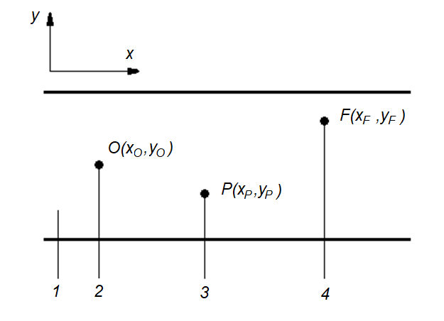
1 - дорога; 2 - проекция наблюдателя на дорогу; 3 - расчетная точка на дороге; 4 - проекция светового центра ОП на дорогу
Рисунок 6.1 - Положение расчетной точки P
где xP , yP и xF , yF - координаты точек Р и F соответственно в системе координат дороги;
- определяют угол δ по формуле
Примечание - Углы наклона ОП δ, θ f , θ m относительно горизонтали показаны на рисунке 6.2.
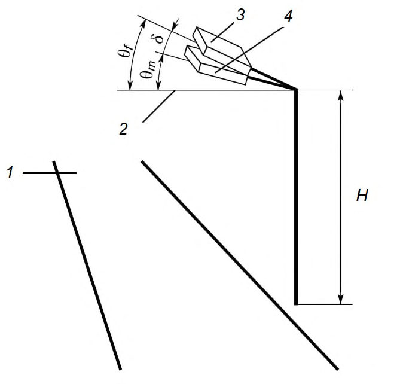
1 - дорога; 2 - горизонталь; 3 - ОП в положении при использовании (θ f ); 4 ОП в положении при измерении θ m
- Рисунок 6.2 - Определение углов наклона ОП
- для координат x , y и высоты Н (рисунки 6.1 и 6.2) и углов ориентации ОП - в системе координат дороги (рисунок 6.3), определяют координаты х' , у' и H' расчетной точки Р в системе координат ОП по формулам: ψ δ ψ δ ν ψ ν ψ δ ν ψ ν sin H cos ) sin sin cos sin (sin y ) sin sin sin cos (cos x x + + + - = ; (6.5)
ψ δ ψ δ ν ψ ν ψ δ ν ψ ν cos H cos ) cos sin cos sin (sin y ) cos sin sin sin (cos x H + - -+ = -. (6.7)
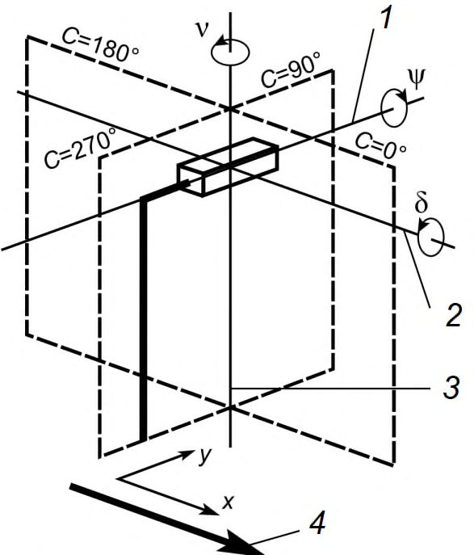
1 - продольная ось ОП; 2 - поперечная ось ОП; 3
- фотометрическая ось ОП; - продольная ось дороги (направление движения)
Рисунок 6.3 - Положительные направления вращений системы координат ОП
Примечание - На рисунке 6.3 показаны оси и положительные направления вращений системы координат ОП из положения при измерении θ m в положение при использовании θ f ;
- рассчитывают значения углов С и γ в системе координат ОП, определяющие направление силы света ОП в точку Р :
- экваториальный угол С определяют по формуле
где угол φ определяют по формулам, приведенным в таблице 6.1;
Таблица 6.1 - Формулы для расчета угла φ
| x' | y' | Интервал φ | φ |
|---|---|---|---|
| > 0 | ≥ 0 | 0° ≤ φ ≤ 90° | x y arctg 180 |
| < 0 | ≥ 0 | 90° ≤ φ ≤ 180° | + x y arctg 1 1 180 |
| < 0 | < 0 | 180° ≤ φ ≤ 270° | + x y arctg 1 1 180 |
| > 0 | 270° ≤ φ ≤ 360° | + x y arctg 1 2 180 | |
|---|---|---|---|
| = 0 | ≠ 0 = 0 | - | 90° принимают 0° |
- меридиональный угол γ определяют по формулам, приведенным в таблице 6.2 . Таблица 6.2 - Формулы для расчета угла γ
| H' | Γ |
|---|---|
| > 0 | H ) y ( ) x ( arctg + 2 2 180 |
| = 0 | 90° |
| < 0 | + + H ) y ( ) x ( arctg 2 2 1 1 180 |
- для значений углов С и γ, используя таблицы Е.1-Е.3 (приложение Е) ГОСТ Р 54350-2015 ( I - таблицы) и формулы (6.9)-(6.15), рассчитывают значение силы света I ( С , γ) в направлении к расчетной точке P .
Для определения значения силы света I ( С ,γ) по направлению, заданному углами С и γ, находят ячейку сетки углов I -таблицы, которой соответствует данное направление. Для этого проверяют выполнение следующих неравенств:
где nI и mI - число узлов сетки I -таблицы по углам С и γ соответственно.
где
СП 323.1325800.2017 где
Примечание - Интерполяция проведена сначала по углу С , а затем по углу γ. Последовательность проведения интерполяции не влияет на результат.
где значение K γ, определяют по формуле (6.12).
6.3Освещенность и равномерность распределения освещенности
6.4Схема выбора расчетных точек для расчета освещенности дорожного покрытия
- в продольном направлении по формуле
где S - шаг ОП, м; N - число расчетных точек в продольном направлении.
Если S ≤ 30 м, то N = 10, если S > 30 м, то N - наименьшее целое число, при котором S / N ≤ 3 м.
- в поперечном направлении по формуле
где Wr - ширина проезжей части дороги или релевантной области, м; n -число расчетных точек в поперечном направлении.
Если Wr ≤ 4,5 м, то n = 3, если Wr > 4,5 м, то n - наименьшее целое число, при котором Wr / n ≤ 1,5 м.
1 - расчетная точка; 2 - расчетное поле; 3 - ширина проезжей части или релевантной области ( Wr ); 4 - ОП
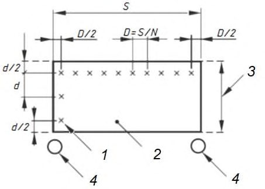
Рисунок 6.4 - Расчетное поле для расчета освещенности
Рисунок 6.5 - Выбор расчетных точек на нестандартном расчетном поле
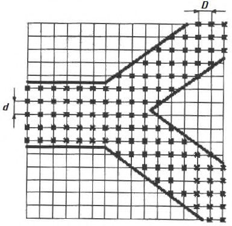
6.5Методика расчета нормируемых параметров освещения селитебных территорий
где I - сила света ОП в направлении расчетной точки P , кд/клм; ε - угол падения, градусы; Ф - световой поток ОП, клм; H - высота световой точки ОП, м; MF - коэффициент эксплуатации.
Значение I в направлении расчетной точки определяют согласно 6.2.
где Ek - освещенность в точке Р от k -го ОП, определяемая по формуле (6.19); m - число ОП, учитываемых при расчете.
где EP , i - освещенность в i -й расчетной точке, определяемая по формуле (6.19); N 0 - общее число расчетных точек расчетного поля.
где E мин -минимальное значение горизонтальной освещенности на расчетном участке дороги; Е ср - средняя горизонтальная освещенность на расчетном участке дороги;
- расчетная точка расположена на высоте h = 1,5 м над уровнем дорожного покрытия на релевантном участке;
- задняя плоская поверхность расчетного полуцилиндра, проходящая через расчетную точку, как показано на рисунке 6.6, вертикальна и перпендикулярна главному направлению движения пешеходов, принятому для этого участка, как правило - продольное направление улицы.
1 - ОП; 2 - расчетный полуцилиндр; 3 - расчетная точка; 4 - плоскость падения света; I - направление силы света ОП в расчетную точку; N -нормаль к задней плоской поверхности полуцилиндра
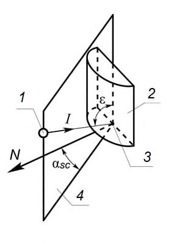
Рисунок 6.6 - Расчет полуцилиндрической освещенности
где α sc - угол между плоскостью падения луча света от ОП и нормалью N (рисунок 6.6); I - сила света ОП в направлении расчетной точки; ε - угол между вертикалью и направлением I , градус; H - высота светового центра
ОП над дорогой, м; h - высота положения расчетной точки, м; Ф - световой поток ОП, клм; MF - коэффициент эксплуатации.
Значение I в направлении расчетной точки определяют по 6.2 с заменой H на ) ( h H -.
где E пц, k - освещенность в точке Р от k -го ОП, определяемая по формуле (6.23); m - число ОП, учитываемых при расчете.
где E пц, i -полуцилиндрическая освещенность в i -й расчетной точке, определяемая по формуле (6.23).
Направление нормали N к задней плоской поверхности полуцилиндра во всех точках расчетного поля выбирают одинаковым.
В расчет включают ОП, проекция которых на горизонтальную расчетную плоскость, проходящую через расчетную точку, удалена от данной расчетной точки на расстояние не более 5-кратной высоты ( Н-h ) расположения ОП над этой плоскостью.
Расчетное поле определяют с учетом геометрии релевантного участка пешеходной зоны.
где α v - угол между вертикальной плоскостью, содержащей падающий от ОП луч света, и нормалью к плоскости окна (рисунок 6.7), градус; hP - высота положения расчетной точки на окне относительно уровня дороги, м.
Значение I в направлении расчетной точки определяют по 6.2 с заменой H на ( Н -hР ).
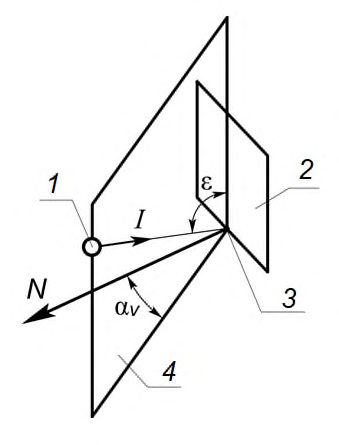
1 - ОП; 2 - плоскость окна; 3 - расчетная точка; 4 - плоскость падения света; I - направление силы света ОП в расчетную точку; N - нормаль к плоскости окна
Рисунок 6.7 - Расчет вертикальной освещенности на окне
Расположение расчетных точек определяют для каждого окна, находящегося на расчетном участке стены здания. На рисунке 6.8 показан пример расположения контрольных точек, помеченных знаком «+».
Рисунок 6.8 - Пример расположения контрольных точек для расчета Ev
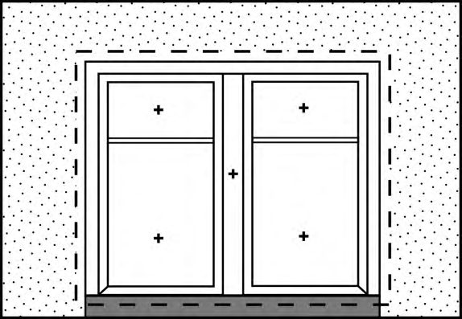
Максимальную освещенность на окне здания Ev, макс определяют как наибольшую освещенность среди всех расчетных точек окна здания.
6.6Яркость и равномерность распределения яркости
6.7Схема выбора расчетных точек для расчета яркости дорожного покрытия селитебных территорий
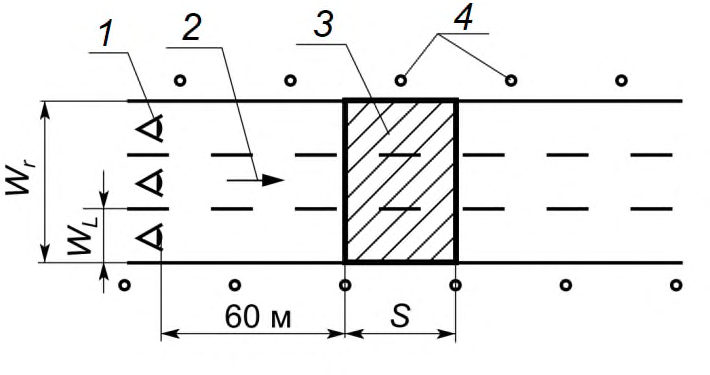
1 - наблюдатель; 2 - направление движения; 3 - расчетное поле; 4 - ОП; 5 -
разделительная полоса
Рисунок 6.9 - Примеры расчетных полей
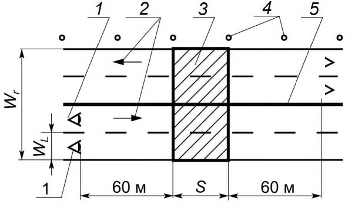
1 - направление движения; 2 - наблюдатель; 3 - расчетные точки; 4 поле; 5
- расчетное - светильник
Рисунок 6.10 - Пример расположения расчетных точек
- в продольном направлении по формуле
где S - шаг ОП, м; N - число расчетных точек в продольном направлении. Если S ≤ 30 м, то N = 10, если S > 30 м, то N - наименьшее целое число, при котором S / N ≤ 3м.
Крайние поперечные ряды расчетных точек отстоят от поперечных границ расчетного поля на расстоянии D /2;
- в поперечном направлении по формуле
где WL - ширина полосы движения, м.
Крайние продольные ряды расчетных точек отстоят от продольных границ расчетного поля на расстоянии d /2.
При расчете яркости высоту расположения глаза наблюдателя принимают h = 1,5 м над уровнем дорожного покрытия.
В продольном направлении наблюдатель располагается перед ближней по ходу движения транспорта границей расчетного поля на расстоянии 60 м (рисунок 6.10).
В поперечном направлении наблюдатель располагается поочередно на центральной линии каждой полосы движения.
Примеры расположения наблюдателя относительно расчетного поля приведены на рисунке 6.9.
В расчете яркости в заданной точке учитывают число ОП m , попавших в поле, границы которого отстоят от указанной расчетной точки на расстояниях, кратных высоте Н расположения ОП над дорогой и показанных на рисунке 6.11.
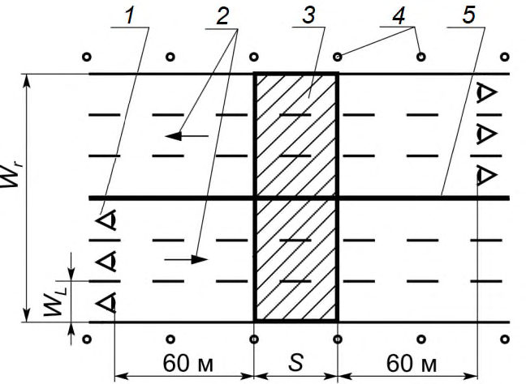
1 - ОП; 2 - наблюдатель; 3 - дорога; 4 - расчетная точка; 5 - расчетное поле (заштриховано); 6 - поле ОП, включенных в расчет
Рисунок 6.11 - Поле ОП, учитываемых при расчете
6.8Методика расчета нормируемых параметров яркости селитебных территорий
где I - сила света ОП в направлении расчетной точки P , кд/клм; r -редуцированный показатель яркости; Ф - световой поток ОП, клм; MF -коэффициент эксплуатации; H - высота световой точки ОП, м.
Значение силы света I в направлении расчетной точки определяют по 6.2.
где ( xP , yP ) -координаты расчетной точки Р ; ( xO , yO ) - координаты проекции на дорогу наблюдателя О ; ( xF , yF ) - координаты проекции на дорогу светового центра ОП, (см. рисунок 6.1).
В случае совпадения точек Р и F , принимают β = 0°.
где Lk -яркость в точке Р от k -го ОП, определяемая по формуле (6.32); m -число ОП, учитываемых в расчете.
Среднюю яркость L ср в направлении наблюдателя, располагаемого на заданной полосе движения, рассчитывают как среднее арифметическое значений яркости в точках расчетного поля по формуле
где Li - яркость в i -й расчетной точке, определяемая по формуле (6.35); N 0 -общее число расчетных точек расчетного поля.
6.9Методика расчета эквивалентной вуалирующей яркости
40 где E зр, k - освещенность на зрачке глаза наблюдателя от k -го ОП, лк; θ k - угол между линией зрения наблюдателя и направлением на k -й ОП, градус.
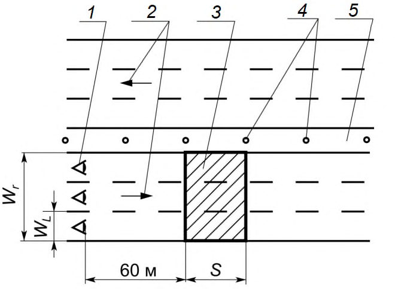
1 - линия горизонта; 2 - ОП; 3 - плоскость экранирования; 4 - расчетное поле; 5 - линия зрения; 6 - глаз наблюдателя; 7 - точки расположения наблюдателя; WL - ширина полосы движения, м; H - высота светового центра
ОП над дорогой, м; S - шаг ОП, м; h - высота расположения глаза наблюдателя над дорогой, м; α - угол наблюдения, градус
Рисунок 6.12 - Расчет эквивалентной вуалирующей яркости
где H -высота светового центра ОП над дорогой, м; h -высота расположения глаза наблюдателя над дорогой, м; I - значение силы света в направлении глаза наблюдателя, кд/клм; θ - угол между линией зрения наблюдателя и направлением на ОП, градус; Ф - световой поток ОП, клм; xF , yF и xO , yO - координаты соответственно точек F и O в системе координат дороги согласно рисунку 6.1.
- ОП должен быть расположен ниже плоскости экранирования кабиной водителя, проходящей через глаз наблюдателя под углом 20° к горизонту, как показано на рисунке 6.12;
- значение угла θ для ОП менее 60°;
- расстояние от ОП до наблюдателя менее 500 м.
6.10Ограничение слепящего действия установок наружного освещения
где L ср - средняя яркость дорожного покрытия, кд/м² ;
- эквивалентная вуалирующая яркость, кд/м² .
42 Lv
Примечание - Формула справедлива при яркостях дорожного покрытия 0,05≤ L≤5 кд/м² .
Значения TI рассчитывают для наблюдателя, последовательно располагаемого в точках, лежащих на центральной линии полосы движения. Первая точка находится на расстоянии 2,75 ( H - 1,5) м от ближайшей границы расчетного поля. Шаг и число остальных точек определяют согласно 6.9.
Максимальное из рассчитанных значений TI для точек положения наблюдателя на полосе движения считают критичным.
7Расчет и проектирование электротехнической части наружного освещения
7.1Общие положения расчета электротехнической части
Электрические сети НО (сети НО) должны соответствовать [4].
- нормированные значения освещенности, яркости, порогового приращения яркости, равномерности освещенности и яркости;
- нормированные значения удельной установленной мощности;
- надежность работы осветительных установок;
- безопасность обслуживающего персонала и населения;
- удобство обслуживания и управления осветительными установками.
7.2Источники электрического питания наружного освещения
В установках освещения фасадов зданий, скульптур, монументов, подсвета зелени с применением осветительных приборов, установленных ниже 2,5 м от поверхности земли или площадки обслуживания, может применяться напряжение до 380 В при степени защиты осветительных приборов не ниже IР 54.
Напряжение 380 В для питания осветительных приборов наружного освещения может применяться при соблюдении следующего условия: ввод в осветительный прибор и независимый, не встроенный в прибор, пускорегулирующий аппарат выполняется проводами или кабелем с изоляцией на напряжение не менее 660 В.
В установках освещения фонтанов и бассейнов номинальное напряжение питания погружаемых в воду осветительных приборов должно быть не более 12 В.
1-й - диспетчерские пункты сетей наружного освещения городов, эвакуационные светильники и световые указатели в транспортной зоне тоннеля;
2-й - осветительные установки городских транспортных и пешеходных тоннелей, осветительные установки улиц, дорог и площадей категории А;
3-й - остальные осветительные установки.
44 Для повышения надежности электроснабжения осветительных установок городских транспортных и пешеходных тоннелей длиной более 80 м, работающих круглосуточно, следует предусматривать их питание от разных секций вводно-распределительного устройства (ВРУ), подключенных к разным линиям на напряжение 0,4 кВ и разным трансформаторам двухтрансформаторных подстанций или трансформаторам двух близлежащих однотрансформаторных подстанций, питающихся по разным линиям 6 - 10 кВ.
Светильники наружного освещения территорий детских яслей-садов, общеобразовательных школ, школ-интернатов, больниц, госпиталей, санаториев, пансионатов, домов отдыха могут питаться как от вводных устройств этих зданий или трансформаторных подстанций, так и от ближайших распределительных сетей наружного освещения при условии, что предусмотрена возможность местного управления освещением.
Информационные световые табло и указатели направления движения пешеходов в пешеходных тоннелях должны быть включены круглосуточно.
Не разрешается присоединять к распределительным линиям НО световые рекламы и витрины. Допускается присоединять к вечерним, отключаемым на ночные часы, фазам НО осветительные приборы праздничного и архитектурного освещения суммарной мощностью не более 2 кВт на фазу. На отдельных участках магистральных улиц и площадей категорий А и Б, где постоянно размещаются установки праздничной
СП 323.1325800.2017 иллюминации мощностью, превышающей указанную выше, должна предусматриваться самостоятельная электрическая линия питания праздничной иллюминации.
Условия подключения световых указателей, светящихся дорожных знаков, осветительных приборов праздничного и архитектурного освещения к линиям НО должны согласовываться с предприятием, эксплуатирующим НО.
7.3Требования к пунктам электрического питания наружного освещения
Шкафы должны быть с электрическим освещением светодиодными лампами (светильниками) или лампами накаливания, при этом необходимо предусматривать его автоматическое выключение при закрывании дверей.
СП 323.1325800.2017 среды, в которой указаны: номинальный ток аппарата, ток уставки расцепителя или номинальный ток плавкой вставки.
7.4Сети наружного освещения
Изоляция нулевых рабочих проводников должна быть равноценной изоляции фазных проводников.
Рекомендуется при использовании опор контактной сети троллейбуса для размещения воздушной сети НО располагать ее с противоположной стороны опор по отношению к контактной сети на высоте 10,5 м от уровня проезжей части.
СП 323.1325800.2017 трансформатора. Для обеспечения возможности частичного отключения светильников в ночное время, их присоединяют с чередованием фаз.
При использовании опор, принадлежащих электросетевым предприятиям, не занимающимся эксплуатацией НО, допускается располагать фазные провода линий НО ниже нулевого провода распределительной электрической сети 0,4 кВ.
Соединять провода из разных металлов или различных сечений следует только на опорах, при этом соединения не должны испытывать механических усилий.
Провода ответвлений должны быть на изоляторах с «глухим креплением».
50 Провода управления каскадом должны располагаться на опоре ниже линий НО, при этом провод управления вечерним режимом и ниже его располагаемый нулевой провод -на стороне проезжей части, провод управления ночным режимом - на стороне тротуара.
Кабель управления каскадом рекомендуется располагать внутри опоры за разделкой кабеля распределительной линии НО в аналогичном же порядке: нижняя жила - ноль, следующая - управление вечерним и наверху ночным режимом.
На всех дверцах опор с кабельной разводкой должен быть нанесен знак электрического напряжения в соответствии с ГОСТ Р 12.4.026. Дверцы должны быть закрыты на замок или стянуты хомутами.
СП 323.1325800.2017
Групповые и распределительные сети на улицах и площадях категорий А и Б в районах застройки зданиями высотой более 5 этажей, а также на территориях общегородских парков, садов, бульваров и скверов, примыкающих к улицам и площадям категорий А и Б, стадионов с трибунами на 20 тысяч зрителей и более, выставок, больниц, госпиталей, санаториев, пансионатов и домов отдыха рекомендуется выполнять кабельными проводами.
Не допускается подвешивание проводов наружного освещения непосредственно над детскими площадками.
При прокладке кабельных линий на инженерных сооружениях следует предусматривать меры для удобной разделки ответвления от кабеля к опоре и возможность его замены участками.
Это требование не распространяется на кабельные выводы из пунктов питания на опоры, а также на переходы дорог и обходы препятствий, выполняемые кабелем.
При использовании совмещенных PEN -проводников (сечением 10 мм² и более из меди и 16 мм² и более из алюминия) они должны соответствовать требованиям, предъявляемым как к защитным проводникам PE , так и к нулевым рабочим проводникам N .
Для защиты трехфазных групповых сетей освещения допускается применять предохранители и однополюсные автоматические выключатели, если сечение проводника N ( PEN ) соответствует требованиям обеспечения его защиты при отключении двух любых фаз.
Пересечения линий с улицами и дорогами при пролетах не более 40 м допускается выполнять без применения анкерных опор и двойного крепления проводов.
Тросы для подвески светильников и питающих линий сети допускается крепить к конструкциям зданий. При этом тросы должны быть с амортизаторами.
Расчет нагрузок осветительных установок наружного
7.5освещения
где К с - коэффициент спроса осветительной нагрузки; K ПРА i - коэффициент, учитывающий потери в пускорегулирующей аппаратуре (ПРА) i -го источника света; Р ном i - номинальная мощность i -го источника света, кВт; n -число источников света, питающихся по линии.
7.6Выбор сечения проводов и кабелей для наружного освещения
Расчетный ток I p линии определяется по формулам:
- для трехфазной сети (четырех- и пятипроводной)
- для двухфазной сети с рабочим и защитным нулевым проводами (трехи четырехпроводной)
- для однофазной сети (двух- и трехпроводной)
где U ном.ф и U ном - соответственно номинальное фазное и междуфазное напряжение сети; cosφ - коэффициент мощности активной нагрузки.
- как для кабелей с резиновой и пластмассовой изоляцией проложенных открыто - для тросовых проводок;
- как для проводов в стальных трубах с понижением допустимых нагрузок на 10-15 % - для проводов, проложенных в пластмассовых трубах;
- как для четырех одножильных проводов, прокладываемых в одной трубе - для пятипроводных линий, проложенных в трубах или каналах строительных конструкций, питающих светильники с газоразрядными лампами и со светодиодами;
- как для четырехжильных кабелей -для пятижильных кабелей, питающих газоразрядные лампы.
- 10% номинального напряжения сети для светильников с электронным пускорегулирующим аппаратом с корректором коэффициента мощности или с электронными источниками питания (для светодиодов);
- 5% номинального напряжения сети для светильников с электромагнитным ПРА.
где М -момент нагрузки рассматриваемого участка сети, кВт ‧ м;
С расчетный коэффициент, значение которого принимается по таблице 7.1; Δ U доп - допустимое значение отклонения напряжения, %, (см. 7.6.7) в осветительной сети от шин 0,4 кВ источника питания. При этом фактическое напряжение на шинах 0,4 кВ источника питания должно быть не ниже номинального значения сети.
Полученное значение сечения округляют до ближайшего большего стандартного.
Таблица 7.1 - Значение коэффициентов С для расчета сети по потере напряжения
| Номинальное напряжение сети, В | Система сети и род тока | Значение коэффициента для проводников из | Значение коэффициента для проводников из |
|---|---|---|---|
| Номинальное напряжение сети, В | Система сети и род тока | меди | алюминия |
| 380/220 | Трехфазная с нулевым рабочим проводником | 72 | 44 |
| 380/220 | Двухфазная с нулевым рабочим проводником | 32 | 19,5 |
| 220 | Однофазная переменного или двухпроводная постоянного тока | 12 | 7,4 |
Момент нагрузки определяется по формуле
где Р р - расчетная нагрузка линии, кВт;
L - длина участка, м, определяется по формуле
где l 1 -длина участка линии от осветительного щитка до первого светильника, м; l - интервалы между светильниками, м;
NR - число светильников в одном ряду.
СП 323.1325800.2017 проектом предусматривается неравномерная нагрузка фаз, например, при наличии вечерних и ночных фаз питания светильников.
В случаях, когда проектом предусматривается неравномерная нагрузка фаз, расчет сети по потере напряжения следует выполнять для источников света наиболее нагруженной фазы.
- питающих многоламповые светильники или блоки из нескольких светильников с равномерной нагрузкой фаз в каждой точке присоединения нагрузки;
- с присоединением светильников к различным фазам в порядке А , В , С , С , В , А - для трехфазных линий и А , В , В , А - для двухфазных линий;
- с присоединением светильников к различным фазам в порядке А , В , С , А , В , С - для трехфазных линий при числе светильников не менее 9 и А , В , А , В - для двухфазных линий при числе светильников не менее 6.
Остальные линии, в том числе линии с присоединением светильников к различным фазам в порядке А , А ...; В , В ...; С , С ... и линии, образованные объединением нулевых проводов нескольких совместно трассируемых групп с местными выключателями, рассчитываются как несимметрично нагруженные и их сечение выбирается применительно к указанным в 7.6.8.
Таблица 7.2 - Минимально допустимые сечения изолированных проводов
| Нормативная толщина стенки гололеда, мм | Сечение несущей жилы, мм² , на магистрали, на линейном ответвлении |
|---|---|
| 10 | 35 (25) |
| 15 и более | 50 (25) |
- чем у фазного при сечении фазных проводников менее или равном 16 мм² для медных и 25 мм² для алюминиевых проводов и не менее 50 % сечения фазных проводников при больших сечениях, но не менее 16 мм² для медных и 25 мм² для алюминиевых проводов - для участков сети, по которым протекает ток от ламп с некомпенсированными пускорегулирующими аппаратами.
Значения площади сечений приведены для случая, когда защитные проводники изготовлены из того же материала, что и фазные проводники. Сечения защитных проводников из других материалов должны быть эквивалентны по проводимости приведенным.
Таблица 7.3
| Сечение фазных проводников, мм² | Минимальное сечение защитных проводников, мм² |
|---|---|
| S 16 | S |
| 16 < S 35 | 16 |
| S > 35 | S /2 |
7.7Выбор защитных аппаратов для наружного освещения
Установка аппаратов защиты в нулевых заземленных проводниках запрещается.
- в местах присоединения сети к источникам питания (распределительные щиты ТП, распределительные пункты, силовые магистрали и др.);
- на групповых щитках (в начале групповых линий);
- в местах уменьшения сечений проводников по направлению к потребителям энергии с учетом 7.7.6, перечисление а;
- со стороны высшего и низшего напряжения понижающих трансформаторов 12-42 В.
- а) при снижении сечений по длине линии и на ответвлениях от нее, если защитный аппарат линии защищает также участок со сниженным сечением;
- б) при снижении сечения по длине линии и на ответвлениях от нее, если сниженное сечение не менее половины сечения начального участка линии;
- в) в местах ответвлений от линии к электроприемникам малой мощности, если питающая линия защищается аппаратом с уставкой не более 25 А - без ограничения длины ответвления и его сечения;
- г) в местах ответвлений от линий к электроприемникам малой мощности, если линия защищена аппаратом с уставкой более 25 А, но не более 63 А при длине до 3 м при любом способе прокладки и без ограничения длины при прокладке в стальной трубе.
Таблица 7.4 - Требования к выполнению ответвления
| Длина ответвления от места его выполнения до аппарата защиты | Требования | Требования |
|---|---|---|
| к сечению проводников | Применяемость к способу прокладки | |
| До 6 м | На менее сечения после аппарата защиты В металлорукавах для | стальных трубах, или коробах - проводников с горючей Допускается там, где безусловно необходимо |
| До 30 м | Не менее сечения, определенного расчетным током, но не менее 10% пропускной способности питающей линии | наружной оболочкой или изоляцией; открыто по конструкциям при условии защиты проводников от возможных механических повреждений - в остальных случаях (кроме кабельных сооружений, пожаро- и взрывоопасных зон) Допускается для ответвлений, выполняемых в трудно доступных местах (например, на большой высоте) |
При этом аппарат защиты должен устанавливаться в удобном для обслуживания месте (например, на вводе в распределительный пункт, групповой щиток, в ящик управления и др.).
- 300% для номинального тока плавкой вставки предохранителя;
- 450% для тока уставки автоматического выключателя, имеющего только максимальный расцепитель (отсечку);
- 100% для номинального тока расцепителя автоматического выключателя с нерегулируемой обратно зависящей от тока характеристикой (независимо от наличия или отсутствия отсечки);
- 125% для тока трогания расцепителя автоматического выключателя с регулируемой обратной зависящей от тока характеристикой; если на этом автоматическом выключателе имеется еще отсечка, то ее кратность тока срабатывания не ограничивается.
Данное указание не относится к вводным автоматам групповых щитков, комбинированные расцепители которых следует выбирать на наибольший для данного типа аппарата ток в целях повышения устойчивости автомата к токам короткого замыкания и которые не предназначаются служить аппаратами защиты. Требования к селективности автоматических выключателей установлены в ГОСТ Р 50030.2.
Таблица 7.5 - Отношение тока аппарата защиты к допустимому длительному току линии
| Аппарат защиты | Значение отношения тока аппарата защиты к расчетному рабочему току линии ( I з : I р ) не менее для ламп | Значение отношения тока аппарата защиты к расчетному рабочему току линии ( I з : I р ) не менее для ламп |
|---|---|---|
| ДРИ, ДНаТ | люминесцентных и светодиодных | |
| Плавкие предохранители | 1,2 | 1 |
| Автоматические выключатели |
СП 323.1325800.2017
| с комбинированными | ||
|---|---|---|
| менее 50 А | 1,4 | 1 |
| 50 А и выше | 1 | 1 |
7.8Защитное заземление наружного освещения
- в сетях с заземленной нейтралью - присоединением к заземляющему винту корпуса светильника РЕ -проводника. Заземление корпуса светильника ответвлением от нулевого рабочего провода внутри светильника запрещается;
- в сетях с изолированной нейтралью, а также в сетях, переключаемых на питание от аккумуляторной батареи -присоединением к заземляющему винту корпуса светильника защитного проводника.
При вводе в светильник проводов без механической защиты, защитный проводник должен быть гибким.
7.9Выбор схем автоматизированных систем управления наружным освещением
- телемеханическим - при числе жителей более 50 тысяч;
- телемеханическим или дистанционным - при числе жителей от 20 до 50 тысяч. При этом метод управления выбирается по результатам техникоэкономического расчета;
- дистанционным - при числе жителей до 20 тысяч.
Питание децентрализованных устройств управления допускается выполнять от линий, питающих осветительные установки.
Между центральным и районным диспетчерскими пунктами должна выполняться прямая телефонная связь или использоваться беспроводная связь.
При питании освещения указанных объектов от сетей внутреннего освещения зданий управление наружным освещением может производиться из этих зданий.
В воздушно-кабельных сетях в один каскад допускается включение до 10 пунктов питания, а в кабельных - до 15 пунктов питания сети уличного освещения.
При этом должны передаваться на исполнительный пункт приказы управления: включить все освещение; включить (отключить) часть освещения (ночной режим работы); отключить все освещение; на диспетчерский пункт - сигналы состояния: включено все освещение; включена (отключена) часть освещения; отключено все освещение; несоответствие состояния освещения посланному приказу и неисправность в сети наружного освещения; опрос показаний счетчика.
Должен быть также предусмотрен контроль исправного состояния канала связи с выводом сигнала на диспетчерский пункт.
Сеть каскадного управления сетями наружного освещения должна строиться таким образом, чтобы улицы, дороги и площади категорий А и Б входили в головной участок каскада или в ближайший к головному участку.
7.10Учет электроэнергии потребляемой наружным освещением
Счетчики активной электрической энергии должны соответствовать климатическим требованиям.
8Расчет электропотребления установок наружного освещения
СП 323.1325800.2017 путем по статьям расхода при обеспечении заданного режима работы системы освещения.
где к - число типов осветительных установок установленных на улице, дороге с самостоятельной питающей сетью;
Р уст j - установленная мощность осветительной установки j -го типа с учетом потерь в ПРА, кВт; nj - число осветительных установок j -го типа, шт.;
Т г. - годовое число часов работы осветительной установки;
К с - коэффициент спроса.
Таблица 8.1 - Годовое число часов работы осветительной установки наружного освещения
| Вид осветительной нагрузки | Т г , ч |
|---|---|
| 1 Наружное освещение | |
| 1.1 Включенное всю ночь | 3500 |
| 1.2 Выключаемое в час ночи | 2350 |
- освещение улиц, дорог, площадей;
- освещение пешеходных переходов;
- освещение автотранспортных тоннелей;
- освещение пешеходных пространств;
- наружное архитектурное освещение зданий и сооружений;
- рекламное освещение.
где Р г.дн , Р г.нч -соответственно, установленная мощность светильника дневного и ночного режима освещения с учетом потерь в ПРА, кВт; n дн , m нч - соответственно, число светильников дневного и ночного режима освещения, шт;
Т г,дн , Т г.нч - соответственно, годовое число часов работы осветительной установки в дневном и ночном режимах работы;
К с - коэффициент спроса.
9Расчет относительной удельной мощности установок наружного освещения
где Pj - мощность j -го светильника, отнесенного к выбранному расчетному полю, Вт; m - число светильников, отнесенных к выбранному расчетному полю;
E ср, i - расчетное значение средней освещенности на поверхности i -го элемента расчетного поля, лк;
Ai - площадь i -го элемента расчетного поля, м² ; n - число элементов расчетного поля, учитываемых в расчете.
При определении значения Dp используют значение средней освещенности E ср, i независимо от того, какое значение средней яркости или средней освещенности выбрано в качестве основного при проектировании освещения данного объекта.
Для участка дороги или улицы со стандартной геометрией значение m равно суммарному числу светильников, установленных на одной опоре (для односторонней или центральной схемы расположения опор) или двух опорах (для двусторонней или шахматной схемы расположения опор).
Для участка улично-дорожной сети с нестандартной геометрией значение m равно суммарному числу светильников, освещающих такой участок.
где P - полная мощность расчетного поля наружного, Вт;
Pk - рабочая мощность k -й световой точки (источник света, ПРА, блок управления световой точкой, переключатель или фотоэлектрический датчик и компонент, связанный со световой точкой и необходимый для ее функционирования), Вт;
Pad -суммарное значение рабочей мощности любого устройства, не включенного в параметр Pk , но влияющего на функционирование наружного освещения (например дистанционный выключатель или фотоэлектрический датчик, централизованный контроллер освещенности или централизованная система управления и др.), Вт;
N - число световых точек, функционирующих в расчетном поле.
Если режим освещения меняется в течение ночи и/или времени года (например, понижение освещенности в связи со снижением интенсивности дорожного движения, изменения условий видимости или других расчетных параметров), тогда должна быть вычислена мощность системы P , соответствующая каждому режиму освещения за данный период.
10Схемы расположения осветительных приборов
Проектирование освещения состоит из светотехнической и электротехнической частей, а также предусматривает техникоэкономическое сопоставление вариантов ОУ.
В таблице 10.1 приведены основные схемы расположения ОП. По условиям обеспечения нормируемой равномерности распределения яркости дорожного покрытия рекомендуется применять следующие схемы:
- односторонняя - при ширине проезжей части до 12 м;
- осевая - при ширине проезжей части от 12 до 18 м;
- двухрядная шахматная - при ширине проезжей части от 24 до 36 м (в отдельных случаях до 48 м);
- двухрядная прямоугольная - при ширине проезжей части от 24 до 36 м (в отдельных случаях до 48 м);
- двухрядная по оси улицы - при ширине проезжей части от 24 до 36 м;
Приведенные рекомендуемые значения ширины проезжей части для каждого вида размещения светильников являются ориентировочными и не исключают необходимости поверочного расчета равномерности распределения яркости или освещенности по проезжей части.
На очень широких улицах используется совокупность двух двухрядных схем - четырехрядная система освещения.
Кроме того, для отдельных случаев рекомендуются опоры с двумя (или более) кронштейнами, иногда смонтированными на разной высоте. В этом случае ОП большей мощности обеспечивает яркость дорожного покрытия, а ОП меньшей мощности освещает тротуар.
Выбор конкретной схемы осветительной установки зависит от геометрии освещаемого участка.
Для узких улиц следует применять однорядное расположение светильников. При этом подвес светильников по оси проезжей части обеспечивает равномерное распределение яркости в направлении, перпендикулярном к оси дороги, и лучшую зрительную ориентацию.
На очень широких улицах и автострадах применяются опоры со спаренными кронштейнами. В этом случае необходимо использовать светильники с широкой боковой кривой силы света (КСС).
К преимуществам такой схемы относится возможность экономии средств за счет сокращения числа опор и уменьшения длины питающего кабеля.
Таблица 10.1 - Типовые схемы расположения осветительных приборов
| Номер и наименование схемы | Схема | Ширина проезжей части, м | Способ установки ОП |
|---|---|---|---|
| 1 Односторонняя | Менее 12 | На опорах с одной стороны проезжей части |
| 2 Двухрядная шахматная | 18-24 | На опорах с двух сторон проезжей части в шахматном порядке |
|---|---|---|
| 3 Двухрядная прямоугольная | 24-48 | На опорах с двух сторон проезжей части напротив друг друга |
| 4 Осевая | 12-18 | На тросах по оси улицы или дороги |
| 5 Двухрядная прямоугольная по оси улицы или дороги | 18-24 | На опорах, установленных на разделяющей полосе |
| 6 Четырехрядная шахматная или прямоугольная | 48 и более | На опорах с двух сторон проезжей части в шахматном или прямоугольном порядке согласно схемам 2 и 3 с дополнительными кронштейнами для освещения тротуаров и параллельных проезжих частей |
| 7 Смешанная в шахматном или прямоугольном порядке | 18-24 | На опорах или стенах зданий с двух сторон проезжей части в шахматном порядке. |
11Структура проектной документации
- рабочие чертежи, предназначенные для производства строительномонтажных работ (основной комплект рабочих чертежей марки ЭН);
- эскизные чертежи общих видов нетиповых изделий, конструкций, устройств, монтажных блоков по ГОСТ 21.114;
- спецификацию оборудования, изделий и материалов по ГОСТ 21.110;
- опросные листы и габаритные чертежи;
- локальную смету (при необходимости).
- общие данные по рабочим чертежам;
- план освещения территории;
- ведомость опор и прожекторных мачт с установленными на них осветительными приборами и электрическим оборудованием;
- принципиальные схемы питания освещения территории;
- принципиальные схемы магистральных и групповых щитков освещения;
- принципиальные схемы управления освещением территории;
- кабельный журнал для сети освещения (при необходимости);
- чертежи узлов установки осветительных приборов и электрооборудования.
АПриложение А. Пример определения удельной установленной мощности для участка расчетного поля дороги
На рисунке А.1 показан участок улицы, содержащий двухполосную проезжую часть и два тротуара, отделенные от нее полосами газона. Светильники расположены по односторонней схеме (справа по ходу движения транспорта) и установлены по два на каждой опоре: один направлен на проезжую часть, другой - на ближний тротуар. Между двумя соседними опорами выделено расчетное поле, содержащее три элемента (проезжую часть, левый и правый тротуары) с нанесенными расчетными точками, по которым определяют значения средней освещенности Е ср каждого элемента.
Показатель Dp рассчитывают по формуле
где PR и PF - мощности соответствующих светильников, Вт;
Е ср, R , Е ср, FL и Е ср, FR - расчетные значения средней освещенности на поверхности проезжей части, левого и правого тротуаров соответственно, лк;
AR , AFL и AFR
- площади соответствующих элементов расчетного поля, м² .
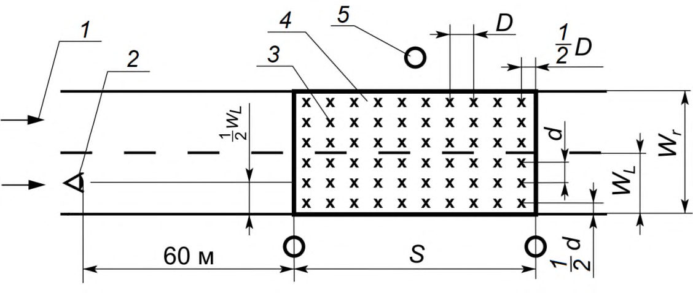
AR , AFL и AFR - элементы расчетного поля: проезжая часть, левый и правый тротуары улицы соответственно; PR и PF - светильники, направленные на проезжую часть и правый тротуар соответственно; 1 - полосы газона; «×» расчетные точки на расчетном поле
Рисунок А.1 - Пример расчетного поля улицы для определения показателя Dp
Библиография
- [1] Федеральный закон от 23 ноября 2009 г. № 261-ФЗ «Об энергосбережении и о повышении энергетической эффективности и о внесении изменений в отдельные законодательные акты Российской Федерации»
- [2] Постановление Правительства Российской Федерации от 20 июля 2011 г. № 602 «Об утверждении требований к осветительным устройствам и электрическим лампам, используемым в цепях переменного тока в целях освещения»
- [3] Постановление Правительства Российской Федерации от 28 августа 2015 г. № 898 «О внесении изменений в пункт 7 Правил установления требований энергетической эффективности товаров, работ, услуг при осуществлении закупок для обеспечения государственных и муниципальных нужд»
- [4] ПУЭ Правила устройства электроустановок (7-е изд.)